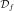
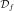
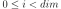

StandardEvent¶
-
class
StandardEvent(*args)¶ Event defined in the standard space.
- Available constructor:
StandardEvent(antecedent, comparisonOperator, threshold)
StandardEvent(event)
- Parameters
- antecedent
RandomVectorof dimension 1 Output variable of interest.
- comparisonOperator
ComparisonOperator Comparison operator used to compare antecedent with threshold.
- thresholdfloat
threshold we want to compare to antecedent.
- event
Event Physical event associated with the standard event to be created.
- antecedent
See also
Analytical,SORM,FORM,SORMResult,FORMResult,StrongMaximumTestNotes
An event is defined as follows:
where
 denotes a random input vector, representing the sources
of uncertainties,
denotes a random input vector, representing the sources
of uncertainties,  is a determinist vector, representing the
fixed variables and
is a determinist vector, representing the
fixed variables and  is the limit state function of
the model.
is the limit state function of
the model.One way to evaluate the probability content
 of the event :
of the event :
is to use an isoprobabilistic transformation to move from the physical space to a standard normal space (U-space) where distributions are spherical (invariant by rotation by definition), with zero mean, unit variance and unit correlation matrix. The usual isoprobabilistic transformations are the Generalized Nataf transformation and the Rosenblatt one.
In that new U-space, the event has the new expression defined from the transformed limit state function of the model
 and its boundary :
and its boundary :
 .
.Examples
A StandardEvent created from a limit state function :
>>> import openturns as ot >>> myFunction = ot.SymbolicFunction(['E', 'F', 'L', 'I'], ['-F*L^3/(3*E*I)']) >>> myDistribution = ot.Normal(4) >>> vect = ot.RandomVector(myDistribution) >>> output = ot.CompositeRandomVector(myFunction, vect) >>> myStandardEvent = ot.StandardEvent(output, ot.Less(), 1.0)
A StandardEvent based on an event :
>>> myEvent = ot.Event(output, ot.Less(), 1.0) >>> myStandardEvent = ot.StandardEvent(myEvent)
- Attributes
thisownThe membership flag
Methods
Accessor to the antecedent RandomVector in case of a composite RandomVector.
Accessor to the object’s name.
Accessor to the covariance of the RandomVector.
Accessor to the description of the RandomVector.
Accessor to the dimension of the RandomVector.
Accessor to the distribution of the RandomVector.
Accessor to the domain of the Event.
Accessor to the Function in case of a composite RandomVector.
getId()Accessor to the object’s id.
getImplementation(*args)Accessor to the underlying implementation.
getMarginal(*args)Get the random vector corresponding to the
 marginal component(s).
marginal component(s).getMean()Accessor to the mean of the RandomVector.
getName()Accessor to the object’s name.
Accessor to the comparaison operator of the Event.
Accessor to the parameter of the distribution.
Accessor to the parameter description of the distribution.
Compute one realization of the RandomVector.
getSample(size)Compute realizations of the RandomVector.
Accessor to the threshold of the Event.
Accessor to know if the RandomVector is a composite one.
setDescription(description)Accessor to the description of the RandomVector.
setName(name)Accessor to the object’s name.
setParameter(parameters)Accessor to the parameter of the distribution.
-
getAntecedent()¶ Accessor to the antecedent RandomVector in case of a composite RandomVector.
- Returns
- antecedent
RandomVector Antecedent RandomVector
in case of a
CompositeRandomVectorsuch as: .
.
- antecedent
-
getClassName()¶ Accessor to the object’s name.
- Returns
- class_namestr
The object class name (object.__class__.__name__).
-
getCovariance()¶ Accessor to the covariance of the RandomVector.
- Returns
- covariance
CovarianceMatrix Covariance of the considered
UsualRandomVector.
- covariance
Examples
>>> import openturns as ot >>> distribution = ot.Normal([0.0, 0.5], [1.0, 1.5], ot.CorrelationMatrix(2)) >>> randomVector = ot.RandomVector(distribution) >>> ot.RandomGenerator.SetSeed(0) >>> print(randomVector.getCovariance()) [[ 1 0 ] [ 0 2.25 ]]
-
getDescription()¶ Accessor to the description of the RandomVector.
- Returns
- description
Description Describes the components of the RandomVector.
- description
-
getDimension()¶ Accessor to the dimension of the RandomVector.
- Returns
- dimensionpositive int
Dimension of the RandomVector.
-
getDistribution()¶ Accessor to the distribution of the RandomVector.
- Returns
- distribution
Distribution Distribution of the considered
UsualRandomVector.
- distribution
Examples
>>> import openturns as ot >>> distribution = ot.Normal([0.0, 0.0], [1.0, 1.0], ot.CorrelationMatrix(2)) >>> randomVector = ot.RandomVector(distribution) >>> ot.RandomGenerator.SetSeed(0) >>> print(randomVector.getDistribution()) Normal(mu = [0,0], sigma = [1,1], R = [[ 1 0 ] [ 0 1 ]])
-
getDomain()¶ Accessor to the domain of the Event.
- Returns
- domain
Domain Describes the domain of an event.
- domain
-
getFunction()¶ Accessor to the Function in case of a composite RandomVector.
- Returns
- function
Function Function used to define a
CompositeRandomVectoras the image through this function of the antecedent:
.
- function
-
getId()¶ Accessor to the object’s id.
- Returns
- idint
Internal unique identifier.
-
getImplementation(*args)¶ Accessor to the underlying implementation.
- Returns
- implImplementation
The implementation class.
-
getMarginal(*args)¶ Get the random vector corresponding to the
marginal component(s).- Parameters
- iint or list of ints, 
Indicates the component(s) concerned.
 is the dimension of the
RandomVector.
is the dimension of the
RandomVector.
- Returns
- vector
RandomVector RandomVector restricted to the concerned components.
- vector
Notes
Let’s note
 a random vector and
a random vector and
![I \in [1,n]](../../_images/math/adc173ecc0bbbd33419f42e83c017301fd114152.svg) a set of indices. If
a set of indices. If  is a
is a
UsualRandomVector, the subvector is defined by . If is a
. If is a
CompositeRandomVector, defined by with  ,
,
 some scalar functions, the subvector is
some scalar functions, the subvector is
 .
.Examples
>>> import openturns as ot >>> distribution = ot.Normal([0.0, 0.0], [1.0, 1.0], ot.CorrelationMatrix(2)) >>> randomVector = ot.RandomVector(distribution) >>> ot.RandomGenerator.SetSeed(0) >>> print(randomVector.getMarginal(1).getRealization()) [0.608202] >>> print(randomVector.getMarginal(1).getDistribution()) Normal(mu = 0, sigma = 1)
-
getMean()¶ Accessor to the mean of the RandomVector.
- Returns
- mean
Point Mean of the considered
UsualRandomVector.
- mean
Examples
>>> import openturns as ot >>> distribution = ot.Normal([0.0, 0.5], [1.0, 1.5], ot.CorrelationMatrix(2)) >>> randomVector = ot.RandomVector(distribution) >>> ot.RandomGenerator.SetSeed(0) >>> print(randomVector.getMean()) [0,0.5]
-
getName()¶ Accessor to the object’s name.
- Returns
- namestr
The name of the object.
-
getOperator()¶ Accessor to the comparaison operator of the Event.
- Returns
- operator
ComparisonOperator Comparaison operator used to define the
Event.
- operator
-
getParameter()¶ Accessor to the parameter of the distribution.
- Returns
- parameter
Point Parameter values.
- parameter
-
getParameterDescription()¶ Accessor to the parameter description of the distribution.
- Returns
- description
Description Parameter names.
- description
-
getRealization()¶ Compute one realization of the RandomVector.
- Returns
- aRealization
Point Sequence of values randomly determined from the RandomVector definition. In the case of an event: one realization of the event (considered as a Bernoulli variable) which is a boolean value (1 for the realization of the event and 0 else).
- aRealization
See also
Examples
>>> import openturns as ot >>> distribution = ot.Normal([0.0, 0.0], [1.0, 1.0], ot.CorrelationMatrix(2)) >>> randomVector = ot.RandomVector(distribution) >>> ot.RandomGenerator.SetSeed(0) >>> print(randomVector.getRealization()) [0.608202,-1.26617] >>> print(randomVector.getRealization()) [-0.438266,1.20548]
-
getSample(size)¶ Compute realizations of the RandomVector.
- Parameters
- nint,

Number of realizations needed.
- nint,
- Returns
- realizations
Sample n sequences of values randomly determined from the RandomVector definition. In the case of an event: n realizations of the event (considered as a Bernoulli variable) which are boolean values (1 for the realization of the event and 0 else).
- realizations
See also
Examples
>>> import openturns as ot >>> distribution = ot.Normal([0.0, 0.0], [1.0, 1.0], ot.CorrelationMatrix(2)) >>> randomVector = ot.RandomVector(distribution) >>> ot.RandomGenerator.SetSeed(0) >>> print(randomVector.getSample(3)) [ X0 X1 ] 0 : [ 0.608202 -1.26617 ] 1 : [ -0.438266 1.20548 ] 2 : [ -2.18139 0.350042 ]
-
getThreshold()¶ Accessor to the threshold of the Event.
- Returns
- thresholdfloat
Threshold of the
Event.
-
isComposite()¶ Accessor to know if the RandomVector is a composite one.
- Returns
- isCompositebool
Indicates if the RandomVector is of type Composite or not.
-
setDescription(description)¶ Accessor to the description of the RandomVector.
- Parameters
- descriptionstr or sequence of str
Describes the components of the RandomVector.
-
setName(name)¶ Accessor to the object’s name.
- Parameters
- namestr
The name of the object.
-
setParameter(parameters)¶ Accessor to the parameter of the distribution.
- Parameters
- parametersequence of float
Parameter values.